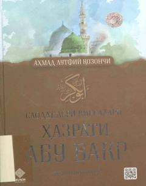

HAHazrati Abu Bakr Siddiq (r.a.)ning ibratli hayoti va Islom yo'lidagi buyuk xizmatlari haqida.
Ushbu kitob Islom tarixidagi eng buyuk shaxslardan biri, Payg'ambarimiz Muhammad (s.a.v.)ning eng yaqin do'sti va birinchi xalifa Abu Bakr Siddiq (r.a.)ning hayoti va faoliyatiga bag'ishlangan. Asarda hazratning Islom yo'lidagi xizmatlari, Payg'ambarimizga bo'lgan sadoqati va xalifalik davridagi muhim tarixiy voqealar yoritilgan.